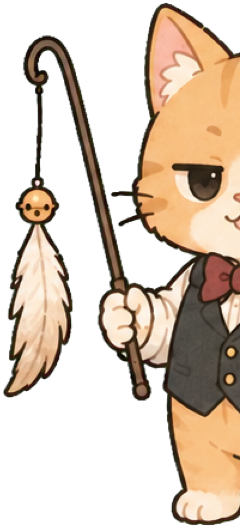

국가적 성취
침대에서 일어남
#중력을 이겨낸 자
- 담당 집사
- 인류 기여도
- 접수 결과
ARCHIVE NOTE
이 기록은 작성 당시 담당 집사의 정보와 말투로 보존됩니다.
과잉집사 중앙인사국 공식 발령
주인님의 사소한 행동을 대업으로 기록할 전담 직원을 정식 배정합니다.

“규정이라서 챙기는 거다냥. 딱히 특별대우 아니다냥.”
※ 이미 계약서가 작성되어 결과가 크게 달라지지 않을 수 있습니다.
창구 01 · 접수 진행 중
좌우로 밀어 사무국을 둘러보세요
도도한 척하며 규정 핑계로 특별대우
잘한 일도, 힘든 일도, 별일 없던 하루도 접수됩니다.
첫 공식 인증은 유효 대업 5개 이후 발급됩니다.
비슷한 행동은 하루 한 번만 도장에 반영됩니다. 칭찬은 매번 정상 지급됩니다.
이번 주도 작은 대업들이 모여 위대한 기록이 되었습니다.
도도한 척하며 규정 핑계로 특별대우
작은 것도 놓치지 않을게요. 주인님의 대업, 끝까지 책임지겠습니다.
기 본 정 보
근 무 현 황
처음부터 다정한 집사가 작은 이야기도 귀 기울여 듣습니다.
✎ 봉인된 서류는 사무국 금고에 보관 중입니다. 열어보고 싶으면 대업을 모으세요.
BUTLER
담당 집사 총평
— 담당 집사 드림 —